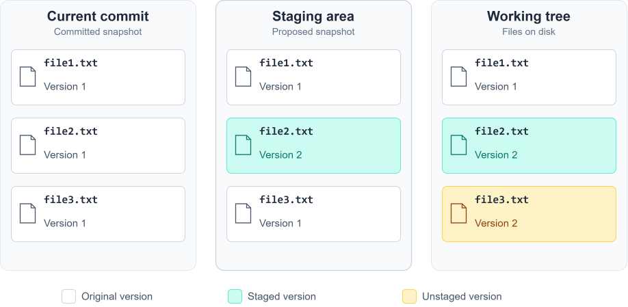
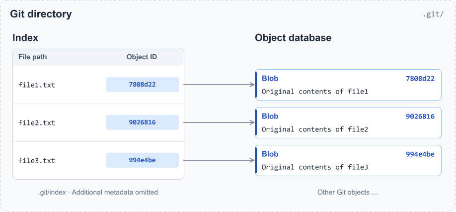
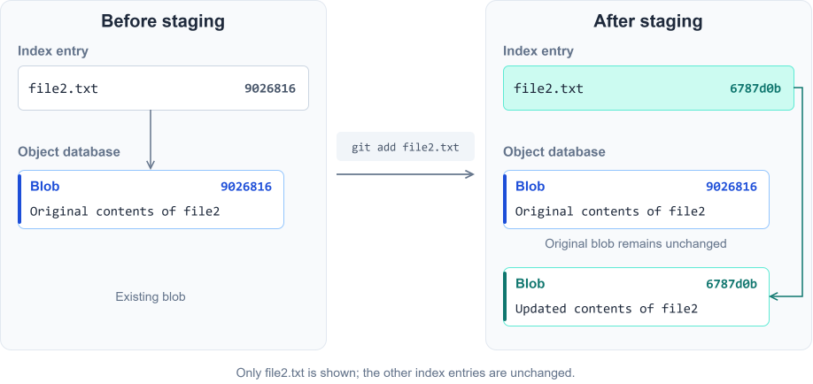
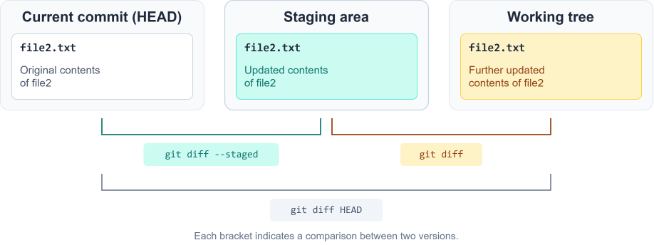
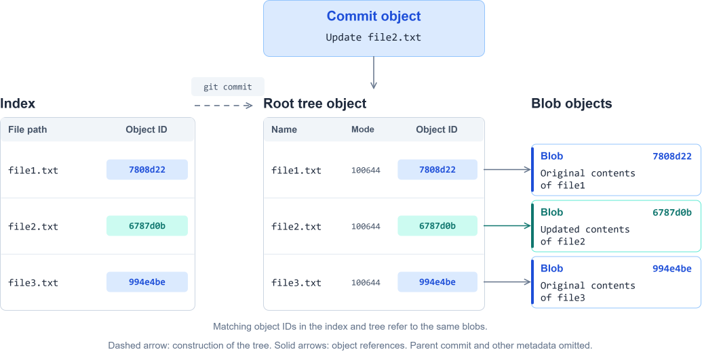
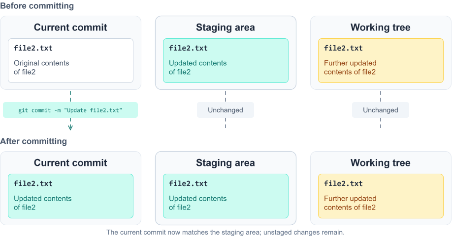
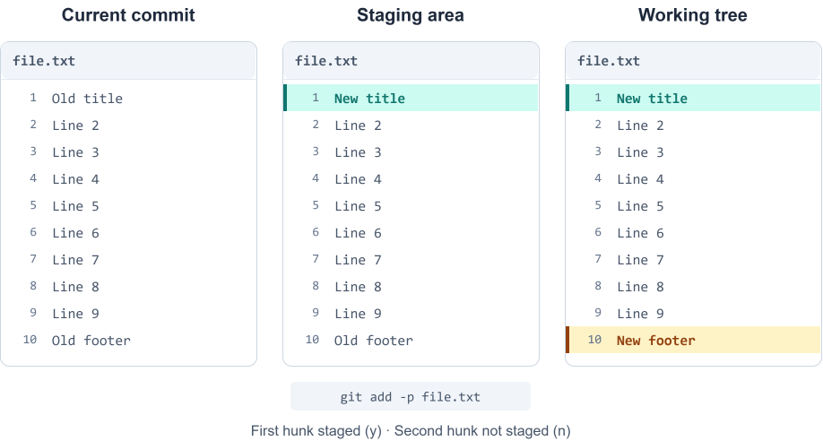

Appendix E — The staging area
Throughout this tutorial, we have used the staging area to prepare changes to be included in commits. We have also compared the contents of the staging area with those of the working tree and the current commit and used several commands to modify the contents of the staging area. In this appendix, we will examine the staging area in more detail to gain a better understanding of how these operations work. We will also learn how to stage individual changes to a file rather than all changes to the file.
E.1 What is the staging area?
As explained in Chapter 2, the staging area represents the snapshot of the files that will be recorded in the next commit. It is also commonly referred to as the index in Git’s documentation.
When we create a commit, we are not simply recording the changes that we have added to the staging area since the previous commit. We are recording a snapshot of the files in the repository. The staging area represents this entire snapshot, including the files that have not changed since the current commit. When we stage changes, we modify this proposed snapshot.
To illustrate this, consider a repository in which the current commit contains three tracked files, file1.txt, file2.txt, and file3.txt. Suppose that we have subsequently modified both file2.txt and file3.txt in the working tree but have only staged the changes to file2.txt. The following figure illustrates the versions of the files represented in the current commit, the staging area, and the working tree.

file2.txt have been staged.
Although we have only staged changes to file2.txt, the staging area represents versions of all three files. If we were to create a commit at this point, it would record the updated version of file2.txt along with the original versions of file1.txt and file3.txt.
When we use git status, Git does not display all the files represented in the staging area. Instead, it compares the staging area with the current commit to determine which changes have been staged. It also compares the working tree with the staging area to determine which changes to tracked files have not been staged and reports any untracked files that are not ignored.
Thus, we should distinguish between the files represented in the staging area and the changes that have been staged. The former constitute the proposed snapshot, while the latter are the differences between this snapshot and the current commit.
When we use git add to stage a new file, Git adds an entry for the file to the staging area. When we stage changes to an existing file, Git updates its entry. When we stage the deletion of a file, for example using git rm, Git removes its entry from the staging area. In each case, we modify the snapshot that will be recorded in the next commit.
E.2 Why do we have a staging area?
Throughout much of this tutorial, we have used git add followed immediately by git commit to record changes in the repository. You may therefore wonder why Git has a staging area at all rather than simply allowing us to commit changes directly from the working tree.
When working on a project, we often make several changes before creating a commit, and these changes may serve different purposes. For example, while implementing a new feature, we may discover and fix an unrelated bug. Rather than recording all the changes in a single commit, we may want to create one commit for the bug fix and another for the new feature. Using the staging area, we can stage and commit the changes related to the bug fix while leaving the changes related to the new feature in the working tree to be committed later.
The staging area also allows us to prepare a commit gradually by staging changes as we decide that they should be included in the next commit. Before creating the commit, we can review the changes we have staged using git diff –staged and, if necessary, stage additional changes or unstage changes that should not be included.
As we will see later in this appendix, we can even stage individual changes to a file rather than all changes to that file.
The staging area thus allows us to separate the process of making changes to a project from the process of deciding which changes to record together in a commit. This helps us create commits that each serve a well-defined purpose and thereby maintain a more meaningful commit history.
E.3 How the staging area works
So far, we have described the staging area as representing a snapshot of the files in the repository. However, the staging area does not actually contain copies of the files themselves.
In a typical Git repository, the staging area is stored in a binary file named index in the Git directory (.git/index). The contents of the files represented in the staging area are stored separately as objects in the Git directory. A Git object containing the contents of a file is called a blob (short for binary large object).
As explained in Chapter 3, Git uses checksums to identify the objects stored in its internal database. By default, these checksums are calculated using the SHA-1 hashing algorithm. To calculate the checksum of a blob, Git uses the contents of the file together with information about the type and size of the object. The resulting checksum is the object ID of the blob.
When we stage an ordinary file using git add, Git stores its contents as a blob if the corresponding blob does not already exist. Git then records the path of the file relative to the root of the repository, the object ID of the blob, and some additional information in the index. If the file already has an entry in the index, Git updates that entry to represent the version we have just staged. The blob itself does not contain the name of the file.

We can use git ls-files --stage to examine the entries in the index. Let’s create a new repository and create three files in the working tree, and add them to the staging area:
$ mkdir ~/example-staging-area $ cd ~/example-staging-area $ git init $ echo "Original contents of file1" > file1.txt $ echo "Original contents of file2" > file2.txt $ echo "Original contents of file3" > file3.txt $ git add . $ git ls-files --stage 100644 7808d22282b7b0b618b4bbb5ca085d669cd5c84e 0 file1.txt 100644 90268164ca5861890a917879c7b09a0f7c93f514 0 file2.txt 100644 994e4be8b752fa9ea15655efa78d815eb9c2250d 0 file3.txt
In the examples in this appendix, some output from setup and commit commands has been omitted. The examples are based on a repository using SHA-1 to calculate object IDs. Depending on your Git configuration, the object IDs displayed in your repository and the lengths of abbreviated object IDs may differ from those shown here.
The output contains one line for each of the three files that we have added to the staging area. The following table describes the four columns of the output, using the fine line of the output as an example.
| Column | Name | Example | Description |
|---|---|---|---|
| 1 | File mode | 100644 |
Indicates the type of file and, for ordinary files, whether the file is executable. The value 100644 represents an ordinary non-executable file. |
| 2 | Object ID | 7808d22... |
The ID of the object containing the staged file contents (a blob for an ordinary file). The object ID in this table has been abbreviated. |
| 3 | Stage number | 0 |
Normally 0. Other values are used to represent different versions of a file during the resolution of merge conflicts. |
| 4 | File path | file1.txt |
The path of the file, relative to the root of the repository when the command is run from that directory. |
Notice that Git has already stored the contents of the three files as objects and recorded their object IDs in the index, even though we have not yet created a commit in the repository. Staging a file does not create a commit.
Now let’s create the first commit in the repository:
$ git commit -m "Add three files" $ git ls-files --stage 100644 7808d22282b7b0b618b4bbb5ca085d669cd5c84e 0 file1.txt 100644 90268164ca5861890a917879c7b09a0f7c93f514 0 file2.txt 100644 994e4be8b752fa9ea15655efa78d815eb9c2250d 0 file3.txt
The output is identical to that before we created the commit. The entries for the three files remain in the index, even though there are no longer any staged changes in the repository.
Next, we modify file2.txt and file3.txt in the working tree and stage only the changes to file2.txt, as in the first figure of this appendix:
$ echo "Updated contents of file2" > file2.txt $ echo "Updated contents of file3" > file3.txt $ git add file2.txt $ git ls-files --stage 100644 7808d22282b7b0b618b4bbb5ca085d669cd5c84e 0 file1.txt 100644 6787d0b110dfd75261b53b1f5a0a58759a32c854 0 file2.txt 100644 994e4be8b752fa9ea15655efa78d815eb9c2250d 0 file3.txt
Notice that the output still contains entries for all three files. However, the object ID associated with file2.txt has changed, as the index now points to a blob containing the updated contents of the file. The object IDs associated with file1.txt and file3.txt have not changed.

If we use git status -s, we see the following:
$ git status -s M file2.txt M file3.txt
The output shows that the changes to file2.txt have been staged, while the changes to file3.txt have not. In contrast to git ls-files --stage, the output does not contain an entry for file1.txt, as the version of this file is the same in the current commit, the staging area, and the working tree.
We can use git ls-files --stage whenever we want to examine the entries in the index. In practice, however, we will generally be more interested in the differences between the staging area and the current commit or the working tree than in the entries themselves.
E.4 Different versions of a file
In the previous example, the versions of file2.txt in the staging area and the working tree are identical but differ from the version in the current commit. Conversely, the versions of file3.txt in the staging area and the current commit are identical but differ from the version in the working tree.
However, the three versions of a file can also differ from one another. To illustrate this, let’s modify file2.txt again without staging the new changes:
$ echo "Further updated contents of file2" > file2.txt $ git status -s MM file2.txt M file3.txt
Notice that git status -s now displays two Ms for file2.txt. This indicates that the file contains both staged and unstaged changes. The first M indicates that the version in the staging area differs from the version in the current commit. The second M indicates that the version in the working tree differs from the version in the staging area.

We can use git diff --staged to examine the staged changes to file2.txt:
$ git diff --staged -- file2.txt diff --git a/file2.txt b/file2.txt --- a/file2.txt +++ b/file2.txt @@ -1 +1 @@ -Original contents of file2 +Updated contents of file2
The output shows the changes between the version of file2.txt in the current commit and the version that we previously staged.
We can use git diff to examine the unstaged changes to the same file:
$ git diff -- file2.txt diff --git a/file2.txt b/file2.txt --- a/file2.txt +++ b/file2.txt @@ -1 +1 @@ -Updated contents of file2 +Further updated contents of file2
Notice that the line removed in this output corresponds to the line added in the output of git diff --staged. This is because the version of the file represented in the staging area is used in both comparisons.
The example illustrates an important property of the staging area: when we stage a file, we stage its contents at that particular point in time. Subsequent modifications to the file in the working tree do not affect the version represented in the staging area.
What happens if we create a commit at this point without staging any further changes? We will examine this in the following section.
E.5 From the staging area to a commit
When we use git commit without specifying any files or options that modify what is committed, Git creates a commit based on the snapshot represented in the staging area. As explained in Chapter 3, the commit also contains information such as the author, the commit message, and references to its parent commits.
More specifically, Git uses the entries in the index to construct the snapshot as one or more objects called tree objects. Tree objects represent the structure of the files and directories in the snapshot and point to the objects containing their contents. The commit object points to the tree object representing the root of the snapshot. Git can reuse objects that already exist in the object database. In particular, the blobs containing the staged file contents have already been stored when the files were staged.

Recall that we have staged changes to file2.txt and subsequently modified the file again without staging the new changes. We also have unstaged changes to file3.txt. Let’s create a commit without staging any further changes:
$ git commit -m "Update file2.txt" $ git status -s M file2.txt M file3.txt
Notice that there are still unstaged changes to both file2.txt and file3.txt, but there are no staged changes. The new commit records the version of file2.txt that we previously staged and the original versions of the other two files. The contents of the files in the working tree have not changed.
Let’s examine the entries in the index again:
$ git ls-files --stage 100644 7808d22282b7b0b618b4bbb5ca085d669cd5c84e 0 file1.txt 100644 6787d0b110dfd75261b53b1f5a0a58759a32c854 0 file2.txt 100644 994e4be8b752fa9ea15655efa78d815eb9c2250d 0 file3.txt
The output is identical to that before we created the commit. Git does not empty the staging area when we create a commit. Rather, the snapshot in the new current commit now matches the snapshot represented in the staging area. This is why git status no longer reports any staged changes.

E.6 Partial staging
So far, when we have staged changes to a file, we have staged all changes to that file. However, sometimes we may want to include only some of the changes to a file in a commit. For example, we may have corrected an error and added a new feature in the same file, and we may want to record these two changes in separate commits.
We can stage individual changes using git add -p, where -p is short for --patch. Git displays the differences between the staging area and the working tree one hunk at a time and prompts us to decide whether to stage each hunk. This is commonly referred to as partial staging.
Let’s create a new repository to illustrate how this works. In this example, we use echo with a quoted string spanning several lines to create a text file. If we enter the command one line at a time, Git Bash displays a continuation prompt (>) until we enter the closing quotation mark. We do not type the continuation prompts ourselves.
$ mkdir ~/example-partial-staging $ cd ~/example-partial-staging $ git init $ echo "Old title > Line 2 > Line 3 > Line 4 > Line 5 > Line 6 > Line 7 > Line 8 > Line 9 > Old footer" > file.txt $ git add file.txt $ git commit -m "Add file.txt"
Next, we modify the first and last lines of file.txt by replacing the contents of the file with the following:
$ echo "New title > Line 2 > Line 3 > Line 4 > Line 5 > Line 6 > Line 7 > Line 8 > Line 9 > New footer" > file.txt
We have now made two independent changes to the file. We have updated the title on the first line and the footer on the last line. As the two changes are separated by several unchanged lines, Git normally displays them in separate hunks when we examine the differences.
Suppose that we want to record the change to the title in one commit and the change to the footer in another commit. We can use git add -p file.txt to stage only the change to the title:
$ git add -p file.txt diff --git a/file.txt b/file.txt --- a/file.txt +++ b/file.txt @@ -1,4 +1,4 @@ -Old title +New title Line 2 Line 3 Line 4 (1/2) Stage this hunk [y,n,q,a,d,j,J,g,/,e,p,?]? y @@ -7,4 +7,4 @@ Line 6 Line 7 Line 8 Line 9 -Old footer +New footer (2/2) Stage this hunk [y,n,q,a,d,K,g,/,e,p,?]? n
For each hunk, Git presents us with several options. The available options may differ depending on the hunk being displayed and the version of Git we are using. The following options are sufficient for our example:
| Option | Description |
|---|---|
y |
Stage the current hunk. |
n |
Do not stage the current hunk. |
q |
Quit without staging the current hunk or any of the remaining hunks. |
? |
Display a description of the available options. |
We answer y when Git prompts us to stage the first hunk and n when Git prompts us to stage the second hunk. Consequently, the change to the title has been staged, whereas the change to the footer has not been staged.

file.txt in the staging area that contains the new title and the original footer.
Notice that the version of file.txt represented in the staging area differs from both the version in the current commit and the version in the working tree. Unlike in our previous example, this version has never existed in the working tree. Git has combined the unchanged contents of the staged version with the changes that we chose to stage and stored the resulting file contents as a blob.
Let’s examine the staged changes:
$ git diff --staged diff --git a/file.txt b/file.txt --- a/file.txt +++ b/file.txt @@ -1,4 +1,4 @@ -Old title +New title Line 2 Line 3 Line 4
As expected, the change to the title has been staged. We can also examine the unstaged changes:
$ git diff diff --git a/file.txt b/file.txt --- a/file.txt +++ b/file.txt @@ -7,4 +7,4 @@ Line 6 Line 7 Line 8 Line 9 -Old footer +New footer
The change to the footer remains unstaged. We can therefore commit the change to the title and subsequently stage and commit the remaining change to the footer:
$ git commit -m "Update title" $ git add file.txt $ git commit -m "Update footer"
We have now recorded the two modifications to the file in separate commits, even though we made both modifications in the working tree before creating either commit.
When we make several unrelated changes to a file, partial staging allows us to organize these changes into separate commits. This can make the commit history easier to understand and is particularly useful when we want each commit to represent a single logical change, as discussed in Chapter 3.
E.7 Summary
The staging area, also referred to as the index, represents the proposed snapshot that will be recorded in the next commit. It represents the versions of all files to be included in the snapshot, not just the files that have been modified since the current commit.
The index contains information about the files represented in the staging area, including their paths and the object IDs of the objects containing their contents. For ordinary files, these objects are referred to as blobs. When we stage changes, Git updates the entries in the index. Creating a commit does not empty the staging area. We can examine the entries in the index using git ls-files --stage.
The current commit, the staging area, and the working tree can contain different versions of the same file. Staged and unstaged changes are determined by comparing these versions.
The staging area allows us to separate the process of making changes to a project from the process of deciding which changes to record together in a commit. Using git add -p, we can even stage individual hunks of changes to a file rather than staging all changes to the file at once. This helps us create commits that each serve a well-defined purpose.
E.8 Exercises
Exercise 1 - Investigating the staging area
The purpose of this exercise is to investigate how different Git operations affect the entries in the index. Throughout the exercise, try to predict how the entries in the index will change before examining them using git ls-files --stage.
Step 1.
Use the following commands to create a new Git repository, create two files in the working tree, and stage the files:
$ mkdir ~/ex01-staging-area $ cd ~/ex01-staging-area $ git init $ echo "Line 1" > file1.txt $ echo "Line 1" > file2.txt $ git add .
Use git ls-files --stage to examine the entries in the index.
- Which files are represented in the staging area?
- Are the object IDs associated with the two files identical? Why or why not?
Step 2.
Create a commit with the commit message “Add two files”. Examine the index again using git ls-files --stage and check the state of the files using git status.
- Have any of the entries in the index changed?
- Why does
git statusno longer report staged changes?
Step 3.
Append the line Line 2 to file1.txt without staging the change. Examine the entries in the index using git ls-files --stage.
Next, stage the change to file1.txt and examine the entries in the index again.
Finally, append the line Line 3 to file1.txt without staging the new change and examine the entries in the index once more.
- After which of these three operations does the object ID associated with
file1.txtchange? - Does the object ID associated with
file2.txtchange? - Which versions of the two files are now represented in the staging area?
Step 4.
Commit the staged changes with a descriptive commit message without staging the remaining changes. Examine the entries in the index using git ls-files --stage and check the state of the files using git status.
- Have any of the entries in the index changed?
- Which versions of
file1.txtare now represented in the current commit, the staging area, and the working tree? - Why does Git still report unstaged changes to
file1.txt?
Exercise 2 - Practising partial staging
The purpose of this exercise is to practise staging individual changes to a file and recording them in separate commits.
Step 1.
Use the following commands to create a repository with a file containing ten lines of text and commit the file:
$ mkdir ~/ex02-staging-area $ cd ~/ex02-staging-area $ git init $ echo "Project: Example > Line 2 > Line 3 > Line 4 > Line 5 > Line 6 > Line 7 > Line 8 > Line 9 > Version: 1" > file.txt $ git add file.txt $ git commit -m "Add project information"
Step 2.
Modify the contents of the file as follows:
$ echo "Project: Git tutorial > Line 2 > Line 3 > Line 4 > Line 5 > Line 6 > Line 7 > Line 8 > Line 9 > Version: 2" > file.txt
Use git diff to examine the changes to the file. How many hunks are displayed, and which changes are shown in each hunk?
Step 3.
Suppose that you want to commit the change to the version number first and the change to the project name afterwards. Use partial staging to stage only the change to the version number.
Before creating a commit, use git diff --staged and git diff to verify that the intended change has been staged and the other change remains unstaged.
Step 4.
Create a commit containing the staged change, then stage the remaining change. Use git diff --staged to verify that the remaining change has been staged before creating another commit. Use descriptive commit messages for both commits.